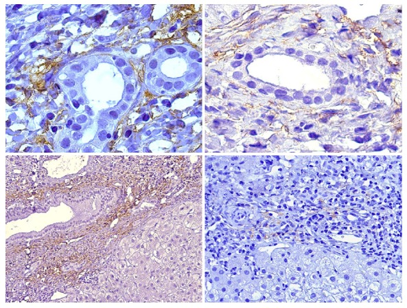
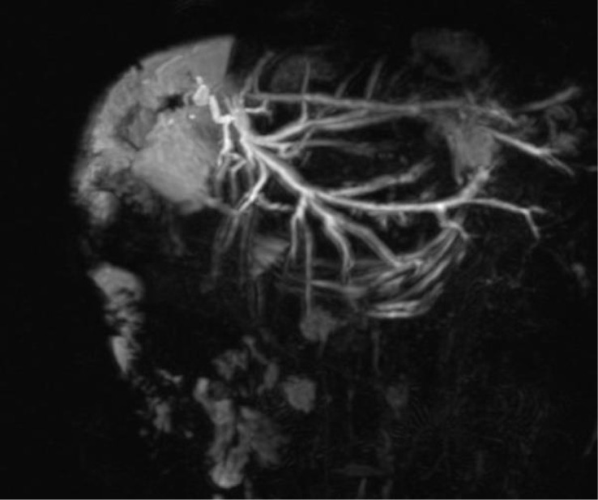
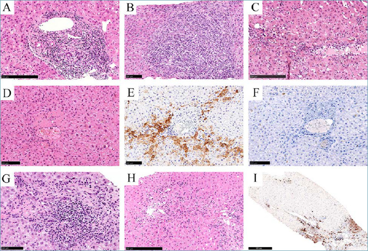

1945 — Viêm gan tự miễn de novo sau ghép gan ở trẻ (de novo autoimmune hepatitis / plasma cell-rich rejection): IgG, tự kháng thể, mô học tương bào — và vì sao hình ảnh chỉ để LOẠI TRỪ
Tags: pattern:viem-gan pattern:thai-ghep pattern:plasma-cell pattern:viem-gan-giao-dien pattern:tu-khang-the pattern:xo-gan vung:gan vung:duong-mat protocol:SA-Doppler protocol:MRCP protocol:MRI protocol:sinh-thiet
Mức chắc chắn (certainty): tổng hợp y văn (literature synthesis) — ghép 5 nguồn open-access đã đọc toàn văn: Gemell R et al., Pediatr Transplant 2026 (PMC13366277, CC BY 4.0) — đoàn hệ 91 trẻ ghép gan, 14 ca plasma cell-rich rejection (15,3%); Aguilera I et al., World J Gastroenterol 2018 (PMC6079293, CC BY-NC 4.0) — cơ chế GSTT1, C4d khoảng cửa, thành phần tế bào; Harputluoglu M et al., World J Transplant 2022 (PMC8968478, CC BY-NC 4.0) — tổng quan chẩn đoán – điều trị; Cussa D et al., Front Gastroenterol 2025 (PMC12952373, CC BY) — biến chứng đường mật muộn ở trẻ ghép gan (ảnh MRCP đối chiếu); Pathologica 2022 (PMC9040542, CC BY-NC-ND) — tập ảnh mô học thải ghép, có thể plasma cell-rich. Phân tích gộp về tỉ lệ mắc (7 nghiên cứu, N = 251) chỉ có abstract, không có PMCID — ghi rõ khi trích. Số nào nguồn không đưa thì ghi "chưa rõ".
Bài này trả lời 4 câu hỏi của một trẻ ghép gan có men gan tăng muộn: (1) Đây là thải ghép cấp, thải ghép thể dịch, viêm gan tự miễn de novo, hay hẹp đường mật? (2) Hình ảnh (siêu âm, MRCP, đàn hồi) làm được gì — và KHÔNG làm được gì? (3) Xét nghiệm nào và mô học nào chốt chẩn đoán? (4) Điều trị và theo dõi ra sao, khi nào nghĩ tới mất mảnh ghép? Điểm tựa: không có dấu hiệu hình ảnh đặc hiệu cho viêm gan tự miễn de novo. Vai trò của CĐHA là loại trừ nguyên nhân mạch – đường mật – khối, còn chẩn đoán nằm ở IgG + tự kháng thể + sinh thiết gan.
1. Tổng quan bệnh học – cơ chế hình ảnh
1.1 Định nghĩa và cách gọi tên đang thay đổi
- Viêm gan tự miễn de novo (de novo autoimmune hepatitis, dn AIH) là viêm gan kiểu tự miễn xuất hiện ở người ghép gan vì bệnh KHÔNG phải viêm gan tự miễn: men gan tăng, IgG tăng, tự kháng thể mới xuất hiện, mô học viêm gan giao diện giàu tương bào.
- Từ 2016, Nhóm công tác Banff đề nghị gọi thực thể này là thải ghép giàu tương bào (plasma cell-rich rejection, PCRR) vì bằng chứng cho thấy đây là phản ứng allo-miễn dịch chứ không phải tự miễn thật. Bài này dùng cả hai tên, ưu tiên dn AIH/PCRR.
- Tần suất (các nguồn khác nhau, phải nhớ khoảng):
- Tổng quan: 3–5% người ghép gan; trẻ 5–10% so với người lớn 1–3% (PMC8968478).
- Đoàn hệ trẻ 91 ca: 14/91 = 15,3%, và 31,1% trong số trẻ đã có thải ghép cấp tế bào (PMC13366277).
- Phân tích gộp 7 nghiên cứu ở trẻ có tự kháng thể tăng sau ghép: 9% (KTC 95% 1–23%), I² = 86% — con số này chỉ nên dùng để tư vấn, không dùng làm ngưỡng chẩn đoán.
- Thời điểm: thể muộn, > 6 tháng sau ghép; trong đoàn hệ trẻ, trung vị 20,6 tháng (IQR 7,5–28); ca đã báo từ 12 tháng tới 7 năm. Nghĩa là không loại trừ được chỉ vì đã ghép nhiều năm.
1.2 TẠI SAO cơ thể "tự miễn" với mảnh ghép: GSTT1 và tương bào
- GSTT1 (glutathione S-transferase T1) là enzyme chuyển hóa pha II, biểu hiện mạnh ở gan và thận; một bộ phận người mang kiểu gen GSTT1*0/0 (null) — không có kháng nguyên. Nếu người nhận null nhận gan từ người cho dương tính, protein GSTT1 của người cho bị nhận diện như kháng nguyên hòa hợp mô phụ (minor histocompatibility antigen) → sinh kháng thể anti-GSTT1 và tế bào T nhớ đặc hiệu GSTT1.
- Con số chốt: kháng thể anti-GSTT1 được tìm thấy ở 100% bệnh nhân dn AIH khi được xét nghiệm (PMC6079293). Đây là bằng chứng mạnh nhất cho bản chất allo-miễn dịch.
- C4d trong mao mạch khoảng cửa là dấu hiệu lắng đọng bổ thể — kiểu khoảng cửa, khác kiểu xoang gan của thải ghép thể dịch do HLA (PMC6079293). Trong đoàn hệ trẻ: C4d dương 21,4% ở PCRR so với 3,2% ở nhóm không PCRR (PMC13366277).
- Thành phần tế bào của thâm nhiễm (đếm bằng phần mềm NewCAST): tế bào T 36,6%, tương bào 28,8% (trong đó 17% IgG4+), tế bào B 14,9%, đại thực bào 19,7%; CD3+ ~1.600/mm² ở người lớn và ~3.000/mm² ở trẻ đang hoạt động bệnh. Đây là lý do mô học được gọi là "giàu tương bào", không phải vì tương bào là tế bào duy nhất.
1.3 TẠI SAO hình ảnh KHÔNG chẩn đoán được dn AIH
- Tổn thương là vi thể, lan tỏa trong khoảng cửa và vùng quanh tĩnh mạch trung tâm, không tạo khối, không tạo ổ dịch, không có mật độ/tín hiệu đặc hiệu. Siêu âm thường bình thường hoặc chỉ thấy gan to, echo không đồng nhất; CT càng không có giá trị chẩn đoán.
- Đàn hồi gan (elastography) có thể tăng khi có xơ hóa, nhưng cũng tăng do ứ mật, sung huyết, viêm cấp — nên không có ngưỡng kPa nào chẩn đoán dn AIH (chưa rõ ngưỡng, cần nghiên cứu riêng).
- Vì vậy hình ảnh chỉ có ba việc: (1) loại trừ hẹp/tắc đường mật (MRCP), (2) loại trừ hẹp/huyết khối động mạch – tĩnh mạch cửa (Doppler), (3) phát hiện biến chứng (ứ mật, ổ áp-xe, xơ gan, tăng áp cửa). Chẩn đoán xác định = sinh thiết gan.
1.4 Vì sao gọi nhầm rất tốn kém
- Nếu gọi là thải ghép cấp và chỉ tăng tacrolimus → bỏ sót dn AIH, tiếp tục tổn thương mô học, xơ hóa và mất mảnh ghép.
- Nếu gọi là nhiễm trùng và giảm ức chế miễn dịch → bùng phát thải ghép.
- Nếu gọi là hẹp đường mật và đặt stent → không giải quyết viêm gan, nguy cơ nhiễm trùng đường mật.
- Trong đoàn hệ trẻ, PCRR gắn với thải ghép mạn 35,7% so với 6,5% và viêm tĩnh mạch trung tâm (central perivenulitis) 85,7% so với 3,2% (PMC13366277) — tức là bỏ sót thì mất mảnh ghép dần, dù tử vong trong nghiên cứu không tăng độc lập (HR 0,51; KTC 0,15–1,73).
2. Mẫu hình + chẩn đoán phân biệt theo vị trí (gamut)
2.1 Bốn kiểu trình bày lâm sàng – hình ảnh
- Mẫu A — tăng men gan đơn thuần, hình ảnh bình thường: AST/ALT tăng 2–10 lần, không sốt, siêu âm và Doppler bình thường, MRCP không hẹp. Đây là kiểu điển hình của dn AIH và cũng là kiểu của thải ghép cấp muộn — chỉ sinh thiết phân biệt được.
- Mẫu B — tăng GGT/ALP (kiểu ứ mật): dễ bị quy cho hẹp miệng nối đường mật. Nhưng 38% trẻ dn AIH có GGT > 2 lần giới hạn trên ở lần theo dõi cuối, do tổn thương ống mật nhỏ (PMC6079293) — nghĩa là GGT tăng không loại trừ dn AIH, và MRCP bình thường không loại trừ.
- Mẫu C — tự kháng thể mới + IgG tăng: ANA/SMA/anti-LKM1/anti-LC1 xuất hiện sau ghép ở trẻ trước đó âm tính. Trong đoàn hệ trẻ, ANA dương 35,7% ở PCRR so với 0% nhóm không PCRR.
- Mẫu D — xơ gan/thải ghép mạn muộn: gan teo, bờ không đều, tăng áp cửa trên Doppler/elastography, ống mật biến mất trên mô học — đây là hậu quả, không phải hình ảnh của dn AIH.
2.2 Gamut theo thời gian sau ghép
- < 1 tháng: thải ghép cấp sớm, thiếu máu – tái tưới máu, nhiễm trùng vết mổ, huyết khối mạch sớm.
- 1–6 tháng: thải ghép cấp, nhiễm CMV/EBV, hẹp miệng nối đường mật, DILI.
- > 6 tháng (đúng "cửa sổ" của dn AIH): dn AIH/PCRR, thải ghép cấp muộn, thải ghép thể dịch mạn, tái phát bệnh gốc (nếu ghép vì AIH/PSC/PBC), hẹp đường mật muộn, de novo MASLD, PTLD, nhiễm virus mạn.
- Nhiều năm: xơ gan mảnh ghép, thải ghép mạn (ductopenia), PTLD, ung thư da/lymphoma.
2.3 Sơ đồ quyết định
flowchart TD
A[Trẻ ghép gan: AST/ALT hoặc GGT tăng] --> B[Siêu âm Doppler gan + đường mật]
B --> C{Động mạch gan / tĩnh mạch cửa bình thường?}
C -->|Không| D[Xử trí mạch: HAT/HAS/huyết khối tĩnh mạch]
C -->|Có| E{Đường mật giãn / nghi hẹp miệng nối?}
E -->|Có| F[MRCP → ERCP/PTC nong bóng hoặc stent]
E -->|Không| G[IgG định lượng + ANA/SMA/anti-LKM1/anti-LC1 + PCR CMV/EBV/adenovirus/HEV]
G --> H{Sinh thiết gan}
H --> I[Viêm khoảng cửa giàu tương bào + viêm gan giao diện ± C4d khoảng cửa]
I --> J[dn AIH / PCRR]
J --> K[Corticoid liều cao rồi giảm + tối ưu CNI ± AZA/MMF; ATG nếu kháng steroid]
K --> L[Theo dõi men gan, IgG, adherence/MLVI, elastography mỗi 3–6 tháng]
3. Bảng so sánh phân biệt (ma trận đối chiếu)
| Thực thể (entity) | Hình ảnh / mô học điển hình | Chốt vào (rule-in) | Chốt loại (rule-out) | Gợi ý xác nhận |
|---|---|---|---|---|
| dn AIH / PCRR | Hình ảnh bình thường hoặc gan to; mô học viêm khoảng cửa giàu tương bào + viêm gan giao diện, ± C4d mao mạch khoảng cửa, ± viêm tĩnh mạch trung tâm | IgG tăng + tự kháng thể mới + mô học giàu tương bào, đáp ứng corticoid; anti-GSTT1 nếu làm được | Không có tương bào, không viêm giao diện, IgG bình thường → ít khả năng (không loại trừ tuyệt đối) | Sinh thiết + IgG + autoantibody + C4d + DSA |
| Thải ghép cấp tế bào muộn (late ACR/TCMR) | Thâm nhiễm khoảng cửa hỗn hợp (lymphocyte, tương bào, eosinophil), viêm nội mô, tổn thương ống mật; Banff RAI cho điểm | Banff RAI ≥ 4–6 + viêm nội mô + đáp ứng steroid; tương bào ít | Tương bào chiếm ưu thế + tự kháng thể + IgG tăng → nghiêng dn AIH | Sinh thiết + Banff RAI; đáp ứng với tăng ức chế miễn dịch |
| Thải ghép thể dịch (AMR) | C4d dương mạnh (kiểu xoang hoặc khoảng cửa), viêm nội mô, DSA dương; hình ảnh không đặc hiệu | DSA + C4d + tổn thương mô học theo Banff 2016 | DSA âm, C4d âm → ít khả năng AMR | DSA (HLA), C4d, sinh thiết |
| Tái phát viêm gan tự miễn | Giống AIH nguyên phát; chỉ xảy ra khi ghép vì AIH | Tiền sử ghép vì AIH + tự kháng thể tái xuất + mô học AIH | Ghép vì bệnh khác → không gọi tái phát | Sinh thiết + so sánh huyết thanh trước/sau ghép |
| Hẹp miệng nối đường mật | MRCP: hẹp khu trú tại miệng nối, giãn đường mật trong gan phía trên; siêu âm thấy giãn ống mật | Hẹp trên MRCP + giãn đường mật + đáp ứng nong bóng | MRCP bình thường, không giãn ống mật → ít khả năng | MRCP → ERCP/PTC |
| Hẹp/huyết khối động mạch gan (HAT/HAS) | Doppler: mất phổ, PSV > 200 cm/s, RI < 0,5 + SAT > 0,08 s; CTA xác nhận | Khuyết thuốc trên CTA + bất thường Doppler | Phổ ba pha bình thường ở nhánh trong gan → loại trừ tắc hoàn toàn | Doppler + CTA (xem bài 1913) |
| Viêm gan do CMV/EBV/adenovirus/HEV | Hình ảnh không đặc hiệu; có thể ổ giảm đậm; PCR máu/mô dương | PCR dương + thể vùi/mô học đặc trưng | PCR âm → ít khả năng (nhưng không loại trừ tuyệt đối) | PCR máu + mô; xem bài 1918 |
| Tổn thương gan do thuốc (DILI) | Không đặc hiệu; có thể viêm giao diện giống AIH | Liên quan thời gian với thuốc + cải thiện khi ngừng | Không có thuốc mới, tự kháng thể mới, IgG tăng → nghiêng dn AIH | Ngừng thuốc nghi ngờ + sinh thiết |
| De novo MASLD | Gan nhiễm mỡ trên siêu âm/CT (−10 đến −40 HU so với lách), elastography tăng | Mỡ trong gan + béo phì/kháng insulin | Không mỡ, mô học viêm giao diện → loại | Siêu âm/CT/MRI PDFF; sinh thiết |
| PTLD | Khối/hạch trong hoặc quanh gan, có thể hoại tử; EBV dương | Khối đặc + EBV + mô học tăng sinh lympho | Không khối, chỉ viêm khoảng cửa → loại | CT/MRI + sinh thiết + EBV |
4. Protocol chụp + hệ phân độ/ngưỡng xử trí
4.1 Bộ ba hình ảnh tối thiểu (theo thứ tự)
- Siêu âm gan + Doppler mạch gan – tĩnh mạch cửa – tĩnh mạch gan: kích thước gan, echo, dịch quanh gan, giãn đường mật, phổ động mạch gan (RI, PSV, SAT), hướng dòng tĩnh mạch cửa. Đây là bước loại trừ mạch rẻ và nhanh nhất.
- MRCP (hoặc MRCP + MRI gan có cản quang từ): khi GGT/ALP tăng hoặc siêu âm nghi giãn đường mật; tìm hẹp miệng nối, sỏi bùn, rò mật. Hình MRCP hẹp miệng nối là "chốt loại" quan trọng nhất trước khi quy mọi thứ cho dn AIH.
- Đàn hồi gan (shear-wave/ARFI hoặc transient elastography): đo nền sau ghép và lặp lại mỗi 6–12 tháng để theo dõi xơ hóa; không dùng để chẩn đoán, vì viêm/ứ mật/sung huyết đều làm cứng gan giả tạo.
4.2 Xét nghiệm (bắt buộc trước sinh thiết)
- Men gan: AST, ALT, GGT, ALP, bilirubin, albumin, INR.
- IgG định lượng (không chỉ protein toàn phần) — IgG tăng là một trụ cột; IgG bình thường không loại trừ.
- Tự kháng thể: ANA, anti-SMA, anti-LKM1, anti-LC1; nếu có điều kiện: anti-GSTT1 (dương ở 100% ca dn AIH khi được làm).
- DSA (HLA) và C4d trên mô: phân biệt với AMR.
- PCR virus: CMV, EBV, adenovirus, HEV (viêm gan E có thể bùng phát sau ghép).
- Đánh giá tuân thủ: MLVI (medication level variability index) — trong đoàn hệ trẻ, MLVI trung vị 2,05, và MLVI cao gắn với thải ghép cấp; kiểm tra tuân thủ trước khi tăng ức chế miễn dịch.
4.3 Sinh thiết gan — tiêu chuẩn xác định
- Chỉ định: men gan tăng kéo dài > 3 tháng không rõ nguyên nhân, sau khi đã loại trừ mạch – đường mật – virus; hoặc nghi thải ghép muộn.
- Đặc điểm mô học gợi ý dn AIH/PCRR: viêm khoảng cửa giàu tương bào, viêm gan giao diện, viêm tĩnh mạch trung tâm (central perivenulitis), ± C4d mao mạch khoảng cửa, ± tổn thương ống mật. Trong đoàn hệ trẻ: viêm tĩnh mạch trung tâm 85,7% và C4d 21,4% ở PCRR.
- Không có ngưỡng "số tương bào/mm²" được chấp nhận chung để chẩn đoán; mô tả định lượng (28,8% thâm nhiễm; 17% IgG4+) là dữ liệu nghiên cứu, không phải tiêu chuẩn.
4.4 Điều trị và ngưỡng theo dõi
- Bậc 1: corticoid liều cao (methylprednisolone 10 mg/kg × 3 ngày rồi giảm liều, theo phác đồ của đoàn hệ) + tối ưu tacrolimus; duy trì prednisone ± azathioprine.
- Bậc 2: mycophenolate mofetil (MMF) thay azathioprine nếu không đáp ứng; ATG cho ca kháng steroid; rituximab ở một số ca chọn lọc. Không có đồng thuận về phác đồ tối ưu (PMC13366277).
- Theo dõi: men gan và IgG mỗi 2–4 tuần trong đợt cấp, sau đó 3–6 tháng; elastography 6–12 tháng; soi/đánh giá thải ghép mạn nếu GGT/ALP tăng kéo dài.
- Tiên lượng: dn AIH có thể tiến triển xơ hóa, thải ghép mạn, mất mảnh ghép nếu không điều trị. Nếu bệnh nhân ghép vì AIH (tái phát, không phải de novo), tái phát 36–68% sau 5 năm và 33–60% phải ghép lại (PMC8968478) — con số này không áp cho dn AIH.
5. Biến thể bình thường và cạm bẫy
- Cạm bẫy 1 — "thấy tương bào là dn AIH": tương bào có mặt trong thải ghép cấp muộn, AMR, thải ghép mạn, nhiễm virus, DILI. Chẩn đoán cần bối cảnh + IgG + tự kháng thể + C4d/DSA + đáp ứng điều trị, không chỉ một loại tế bào.
- Cạm bẫy 2 — tự kháng thể dương = tự miễn: ANA/SMA không đặc hiệu; Banff 2016 đã bỏ ANA/SMA khỏi tiêu chuẩn chẩn đoán vì chúng xuất hiện ở nhiều bối cảnh. Tự kháng thể chỉ tăng xác suất.
- Cạm bẫy 3 — IgG bình thường: một phần bệnh nhân không tăng IgG; IgG bình thường không loại trừ dn AIH (đặc biệt trẻ đang dùng ức chế miễn dịch).
- Cạm bẫy 4 — GGT tăng thì đổ cho đường mật: MRCP bình thường không loại trừ tổn thương ống mật nhỏ của dn AIH; 38% trẻ có GGT > 2× ULN ở lần theo dõi cuối.
- Cạm bẫy 5 — elastography "cứng = xơ": viêm cấp, ứ mật, sung huyết làm tăng độ cứng; đo trong đợt cấp dễ overcall xơ hóa. Đo lại khi men gan ổn định.
- Cạm bẫy 6 — bỏ qua tuân thủ: MLVI cao là yếu tố nguy cơ thải ghép; tăng thuốc mà không kiểm tra tuân thủ thì thất bại.
- Cạm bẫy 7 — quên nhiễm trùng: CMV disease là yếu tố tử vong độc lập (HR 3,71; KTC 1,67–8,25) trong đoàn hệ trẻ; trước khi tăng ức chế miễn dịch phải loại trừ nhiễm.
- Cạm bẫy 8 — hình ảnh đẹp làm yên tâm: siêu âm/MRCP bình thường không loại trừ dn AIH; đây là bệnh mô học.
6. Tự lượng giá — Blind Quiz ngay trên trang tĩnh
Ca 1 — trẻ 8 tuổi, ghép gan 2 năm, men gan tăng, không sốt

- Gợi ý lâm sàng: AST/ALT tăng 3 lần, IgG tăng, ANA mới dương; siêu âm và MRCP bình thường.
- Câu hỏi: Hình cho thấy kỹ thuật gì và lắng đọng ở đâu? Lắng đọng này gợi ý cơ chế nào? Cần thêm xét nghiệm gì để phân biệt với AMR do HLA?
Bấm để hiện đáp án (findings + chẩn đoán)
- Dấu hiệu: các khoảng cửa có thâm nhiễm tế bào và C4d dương ở mao mạch khoảng cửa (nhuộm hóa mô miễn dịch) — kiểu khoảng cửa, không phải kiểu xoang.
- Chẩn đoán: dn AIH / plasma cell-rich rejection — C4d khoảng cửa phản ánh hoạt hóa bổ thể qua kháng thể (anti-GSTT1), không phải tự miễn kinh điển.
- Cần thêm: DSA HLA, anti-GSTT1, IgG định lượng, autoantibody, và đáp ứng với corticoid; AMR do HLA thường có C4d kiểu xoang + DSA HLA dương.
- Nguồn ảnh: Aguilera I et al., World J Gastroenterol 2018, PMC6079293 Fig. 2, CC BY-NC 4.0.
Ca 2 — trẻ 5 tuổi, ghép gan 18 tháng, GGT tăng đơn độc

- Gợi ý lâm sàng: không vàng da, không sốt, men gan nhẹ, GGT tăng gấp 4 lần; siêu âm thấy đường mật trong gan hơi giãn.
- Câu hỏi: Hình MRCP cho thấy gì, ở đâu? Vì sao không được kết luận ngay "dn AIH"? Bước xử trí tiếp theo?
Bấm để hiện đáp án (findings + chẩn đoán)
- Dấu hiệu: hẹp khu trú tại miệng nối mật–ruột (biliodigestive anastomosis) sau ghép gan chia gan trái, kèm giãn đường mật trong gan phía trên.
- Chẩn đoán: hẹp miệng nối đường mật muộn — nguyên nhân ứ mật hay gặp ở trẻ ghép gan; không phải dn AIH dù GGT tăng.
- Xử trí: ERCP/PTC nong bóng ± stent; chỉ sinh thiết nếu sau khi giải quyết hẹp mà men gan vẫn tăng hoặc có tự kháng thể/IgG tăng.
- Nguồn ảnh: Cussa D et al., Front Gastroenterol (Lausanne) 2025, PMC12952373 Fig. 2, CC BY.
Ca 3 — trẻ 12 tuổi, ghép gan 4 năm, sinh thiết vì men gan tăng dai dẳng

- Gợi ý lâm sàng: IgG tăng nhẹ, ANA âm, DSA âm; không đáp ứng hoàn toàn với tăng tacrolimus.
- Câu hỏi: Panel G và I cho thấy gì? Vì sao "giàu tương bào" chưa đủ để chẩn đoán? Cần bổ sung gì?
Bấm để hiện đáp án (findings + chẩn đoán)
- Dấu hiệu: G — thâm nhiễm khoảng cửa với nhiều tương bào và viêm gan giao diện; I — nhuộm MUM-1 đánh dấu tương bào, giúp đếm và định vị.
- Chẩn đoán: biến thể giàu tương bào của thải ghép (plasma cell-rich rejection) — nhưng tương bào cũng gặp trong thải ghép cấp muộn/AMR, nên cần bối cảnh, IgG, tự kháng thể, C4d/DSA và đáp ứng điều trị.
- Cần bổ sung: anti-GSTT1 (nếu có), C4d, DSA; cân nhắc thử corticoid liều cao và đánh giá đáp ứng; kiểm tra tuân thủ (MLVI) và PCR CMV/EBV trước khi tăng ức chế miễn dịch.
- Nguồn ảnh: Pathologica 2022, PMC9040542 Fig. 4 (G, I), CC BY-NC-ND.
Bài liên quan chéo
- 1916 – Thải ghép cấp tế bào (TCMR) sau ghép gan
- 1917 – Thải ghép thể dịch (AMR) sau ghép gan
- 1918 – Nhiễm CMV sau ghép gan ở trẻ
- 1913 – Hẹp & huyết khối động mạch gan sau ghép
- 1827 – Hẹp tĩnh mạch cửa sau ghép gan
- 1814 – Rò mật sau cắt gan
Ảnh
images/1945_dnAIH_Mo-hoc-PMC6079293-f2.jpg— khoảng cửa trong thải ghép giàu tương bào, C4d dương ở mao mạch khoảng cửa. Aguilera I et al., World J Gastroenterol 2018, PMC6079293 Fig. 2, CC BY-NC 4.0.images/1945_dnAIH_MRCP_PMC12952373-f2.jpg— MRCP: hẹp miệng nối mật–ruột sau ghép gan chia gan trái. Cussa D et al., Front Gastroenterol (Lausanne) 2025, PMC12952373 Fig. 2, CC BY.images/1945_dnAIH_Mo-hoc-PMC9040542-f4.jpg— mô học thải ghép; panel G (biến thể giàu tương bào + viêm giao diện) và I (MUM-1). Pathologica 2022, PMC9040542 Fig. 4, CC BY-NC-ND (dùng nguyên bản, không crop/ghép).
Không dùng để chẩn đoán độc lập khi chưa có người hướng dẫn.